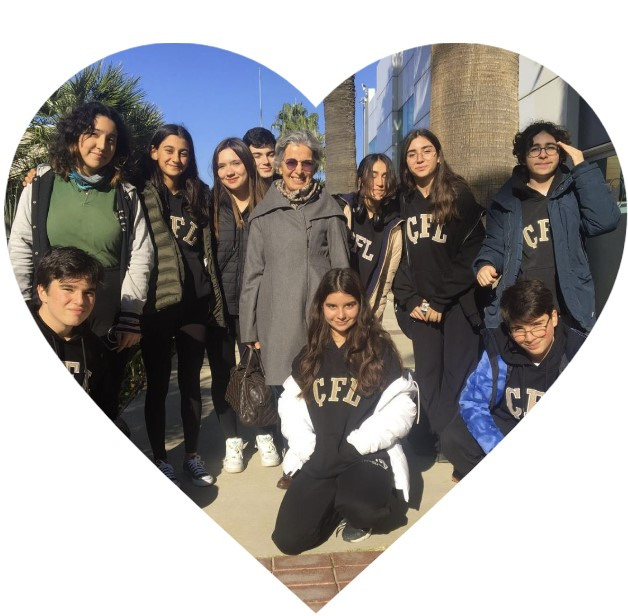

Çiğli Fen Lisesi
First Lego League Takımı

-Robokod Çiğli Fen takımımız 2019'dan bugüne çalışmalarını sürdürmektedir. Ekibimiz 10 kişiden oluşmakta ve hepimiz Çiğli Fen Lisesi'nde öğrenim görmekteyiz. Okulumuz, öğrencilerine projeler ve yarışmalara katılma konusunda oldukça destekleyici. Bu yarışmalardan biri de First Lego League. Bu yarışmada öğrenciler, yarışmaya hazırlık sürecinde takım olarak çalışıyor, robotların yapımından programlamaya kadar her konuda bilgi ve beceri ediniyorlar. Yarışma, öğrencilerin problem çözme yeteneklerini, takım çalışmasını, ve yaratıcı düşünme becerilerini geliştirmesine olanak tanıyor. Robokod Çiğli Fen takımı olarak yarışmada yer alacağız. Bu yarışma sürecinde eğlenmeyi de unutmayarak başarılı olmak için elimizden geleni yapacağız ve en iyisini ortaya koyacağız!
-Takım kaptanı, art arda 3 kere FLL'ye katılan tutkulu bir genç.
-Gece gündüz robotumuzla ilgilenen, robotu koynunda büyüten "piremses". Halk arasında "Öyküsüsü" olarak da bilinir.
-Bateristçi olan "Bilıl" yaşam enerjisini mavi beresinden ve kulaklığından alır, her zaman şaka yapar ve bizi güldürür.
-Önemli bir projecimiz olan Hilal, gece gündüz demeden tasarım yapar.
-Çok mert olan bir delikanlı; robot, yazılım ve bilgisayar uzmanı. Ayrıca teknolojik bir deha.
-Mukavvalarla aşırı ilgili, boş zamanlarında mukavvalarla konuştuğu iddia ediliyor.
-Robotik sınıfında bile dakikada 300 şınav çekiyor, içinde indüksiyon motoru olabileceği düşünülüyor.
-Proje ve Valorant aşığı, sabah akşam demeden proje yapıp Valorant oynar.
-7 gün 24 saat sürekli web sitesi yapar ve kod yazar, halk arasında "Developer Murat" olarak da bilinir.
-Aşırı derecede yakışıklı, zeki, komik ve sempatik; çiçeği burnunda bir gencimizdir.